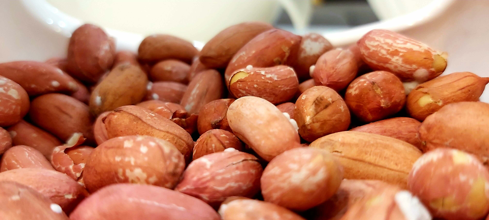
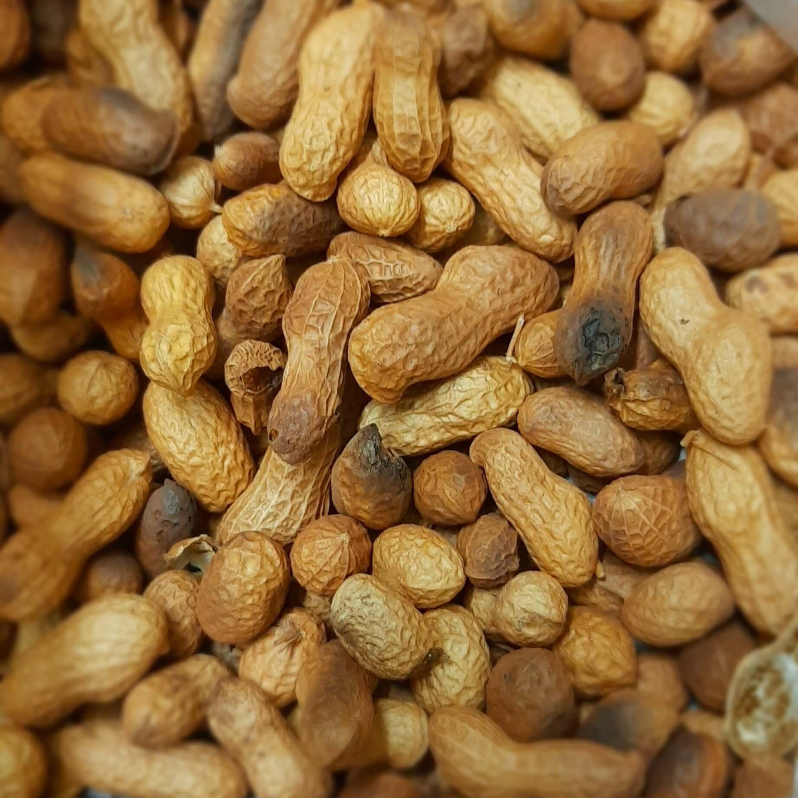

👸e.target
🐠특징
-
addEventListener에 지정한 handler함수에는 event 변수가 자동으로 생성된다.
-
e.target에는 마우스의 위치, 선택한 요소 등등의 정보가 들어있다.
-
개발자도구에서 해당 요소의 자식 요소를 확인할 수 있다.
🐳사용하는 이유
이거는 정말 신세계.
같은 그룹에 있는 요소에만 이벤트가 발생하게 만들 수 있다.
땅콩에 비유하자면,
땅콩의 왼쪽 알맹이를 누르면 오른쪽 알맹이가 팝콘처럼 터지는 함수를 만들었다고 치자.
함수의 동작은 왼쪽 알맹 꾹, 오른쪽 알맹 파사삭으로 구성되어있다.
1번 땅콩의 왼쪽 알맹만이 1번 땅콩의 오른쪽 알맹과 매치된다는 조건이 있다.
e.target 사용하지 않는다는 건,
땅콩 껍질 까서 하나의 병에 다 담아 놓은 모습과 유사하다.
알맹이마다 동작을 지정하고 몇번째 땅콩인지 인지해야 한다.
왜냐하면 땅콩이 막 섞여있으니까 짝꿍 알맹을 잃기 쉽다.

e.target 사용한다는 건,
껍질 벗기지 않은 땅콩의 모습과 유사하다.
왼쪽 알맹과 오른쪽 알맹이 하나의 껍질로 묶여 있어서,
땅콩을 막 섞어도 알맹이들은 짝을 맞추고 있어서 몇번째 땅콩의 알맹이인지 알 필요 없다.

즉, e.target 사용안하면 dom 요소를 페이지 처음부터 끝까지 찾아내서 동작하게 만든다.
e.target 사용하면 해당 그룹 내에서 필요한 요소를 찾아내서 동작하게 만든다. 다른 그룹과의 간섭은 없다.
그룹에 이벤트를 지정해 놓기만 하면, 동작을 지정한 함수를 여기저기 막 가져다 쓸 수 있다.